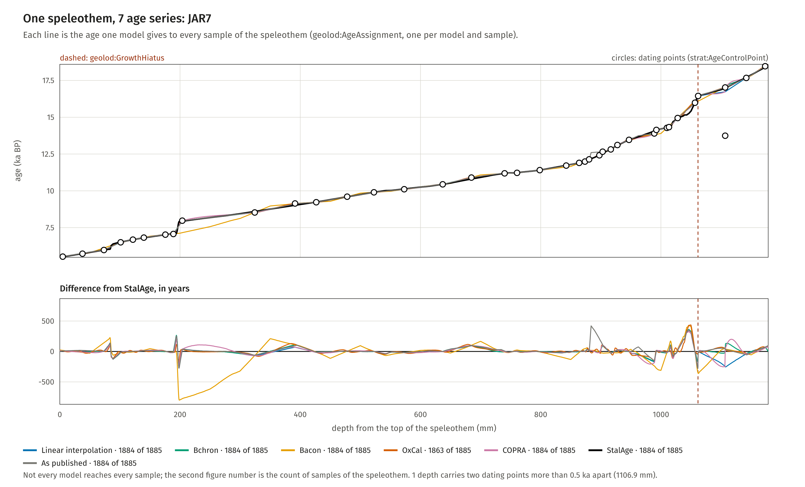
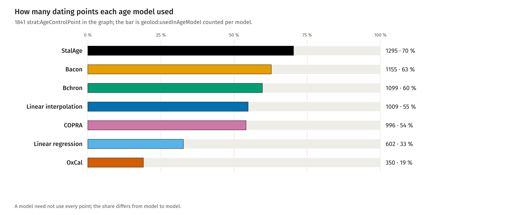

PREFIX geolod: <http://w3id.org/geo-lod/>
PREFIX strat: <http://w3id.org/geo-lod/strat/>
PREFIX sisal: <http://w3id.org/geo-lod/sisal/>
# All ages of one sample, with the model behind each and the one to follow.
# Runs on the full graph SISAL/sisal_rdf.py writes, not on the committed Turtle.
SELECT ?model ?age_ka ?status WHERE {
?a a geolod:AgeAssignment ;
<http://www.cidoc-crm.org/cidoc-crm/P140_assigned_attribute_to> sisal:sample_26516 ;
geolod:ageModel ?model ;
geolod:ageKaBP ?age_ka ;
geolod:assignmentStatus ?status .
} ORDER BY ?model
Not run here: the assignment nodes are in the large graph the pipeline writes, not in the committed Turtle.
In the data

JAR7: the age of every sample under 7 age series
Fiona Schenk, Florian Thiery, Research Squirrel Engineers at LEIZA. CC BY 4.0.
PREFIX geolod: <http://w3id.org/geo-lod/>
PREFIX strat: <http://w3id.org/geo-lod/strat/>
PREFIX sisal: <http://w3id.org/geo-lod/sisal/>
SELECT ?model (COUNT(?h) AS ?n) WHERE {
?h a geolod:GrowthHiatus ;
geolod:respectedByAgeModel ?model .
} GROUP BY ?model ORDER BY DESC(?n)
Run on sisal_v3_dating.ttl and compared with the figure: 37 hiatuses in 21 speleothems; StalAge 32, Linear interpolation 31, COPRA 30, Bchron 29, Bacon 8, Linear regression 7, OxCal 1.

Dating points used by each age model
Fiona Schenk, Florian Thiery, Research Squirrel Engineers at LEIZA. CC BY 4.0.
PREFIX geolod: <http://w3id.org/geo-lod/>
PREFIX strat: <http://w3id.org/geo-lod/strat/>
PREFIX sisal: <http://w3id.org/geo-lod/sisal/>
SELECT ?model (COUNT(?p) AS ?n) WHERE {
?p a strat:AgeControlPoint ;
geolod:usedInAgeModel ?model .
} GROUP BY ?model ORDER BY DESC(?n)
Run on sisal_v3_dating.ttl and compared with the figure: 1841 dating points.
Classes
Class
Label
Comment
CRM anchor
geolod:AgeAssignment
Age Assignment
One model's age for one sample. Kept as an assignment and not as a bare property because a sample has as many ages as there are models that reached it, and a consumer has to be able to tell which is which.
crm:E13_Attribute_Assignment
geolod:AgeModel
Age Model
A named method for turning dating points into an age at every depth. SISAL v3 carries seven, and the chronology as originally published is an eighth.
crmsci:S6_Data_Evaluation
geolod:Chronology
Chronology
A depth-age model assigning calendar ages to positions within a palaeoclimate archive. Also a temporal reference system: an age is only meaningful together with the model that produced it, so the same node serves as the value of geolod:ageChronology on an observation and of time:hasTRS on its time position.
crmsci:S4_Observation
geolod:DatingMethod
Dating Method
How a control point was obtained. Four values in the cut: two mass-spectrometric U/Th methods, a combination of methods, and the observation that the speleothem is still growing.
crm:E55_Type
geolod:GrowthHiatus
Growth Hiatus
A surface inside a speleothem across which nothing was deposited. A statement about the archive: the time above and the time below it do not join up, however densely either is sampled.
crmarchaeo:A3_Stratigraphic_Interface
geolod:IceCoreChronology
Ice Core Chronology
A depth-age model for an ice core, such as EDC2, EDC3 or AICC2023. Ice cores yield two ages per depth - one for the ice, one for the air trapped in it - so a chronology that publishes both appears here as two individuals rather than one.
crmsci:S4_Observation
geolod:RecordGap
Record Gap
SISAL's statement that the isotope record does not cover this position. An assignment, not an interface: the carbonate is there, the measurements are not, and a later study can close the gap without changing the speleothem.
crm:E13_Attribute_Assignment
geolod:UThChronology
U-Th Chronology
A depth-age model for a speleothem, built on U-Th dating points: the seven SISAL v3 models and the chronology as originally published. geo_lod_core.ttl names this class as the SISAL counterpart of geolod:IceCoreChronology but does not define it; defined here, so that the eight chronology individuals reach crmsci:S4_Observation through geolod:Chronology like every other class in the graph.
crmsci:S4_Observation
strat:AgeControlPoint
Age Control Point
A dated tie point (depth + age) that constrains the age-depth model.
crm:E13_Attribute_Assignment
strat:AgeDepthModel
Age-Depth Model
A depth->age model for the core (here: piecewise-linear interpolation between dated tephra tie points).